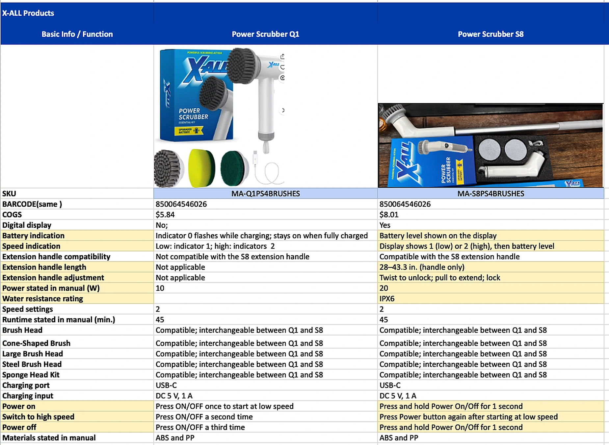
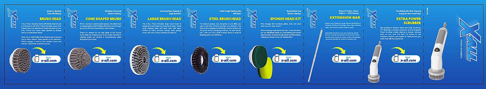
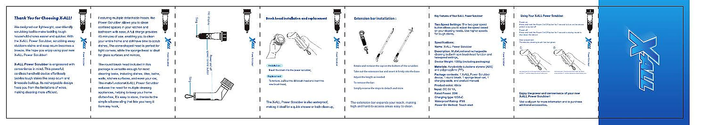

Standard brush head
Compatible and interchangeable between Q1 and S8.
| Product | Status | Internal SKU | One-Pager | Image | Digital Display | Power (W) | Extension Handle | Brush Heads | Barcode |
|---|---|---|---|---|---|---|---|---|---|
| Previous | MA-Q1PS4BRUSHES | No | 10 | Not compatible with S8 handle | Interchangeable with S8 | 850064546026 | |||
| Current | MA-S8PS4BRUSHES | Yes | 20 | Compatible · 28–43.3 in | Interchangeable with Q1 | 850064546026 |
Compatible and interchangeable between Q1 and S8.
Compatible and interchangeable between Q1 and S8.
Compatible and interchangeable between Q1 and S8.
Compatible and interchangeable between Q1 and S8.
Compatible and interchangeable between Q1 and S8.
S8 compatible. Adjustable from 28 to 43.3 in (handle only).
Power on
Press and hold Power On/Off for 1 second.
Switch to high speed
Press the Power button again after starting at low speed.
Power off
Press and hold Power On/Off for 1 second.
Shows speed 1 (low) or 2 (high), followed by battery level.
Twist
Twist to unlock.
Extend
Pull to extend within the 28–43.3 in range.
Lock
Lock the handle at the selected length.
For full care and safety details, consult the printed manual included with the product.
The S8 adds a digital display and extension handle compatibility, with higher stated power and updated button controls.
| Basic info / function | Power Scrubber Q1 | Power Scrubber S8 |
|---|---|---|
| SKU | MA-Q1PS4BRUSHES | MA-S8PS4BRUSHES |
| Barcode (same) | 850064546026 | 850064546026 |
| COGS | $5.84 | $8.01 |
| Digital display | No | Yes |
| Battery indication | Indicator 0 flashes while charging; stays on when fully charged | Battery level shown on the display |
| Speed indication | Low: indicator 1; high: indicator 2 | Display shows 1 (low) or 2 (high), then battery level |
| Extension handle compatibility | Not compatible with the S8 extension handle | Compatible with the S8 extension handle |
| Extension handle length | Not applicable | 28–43.3 in (handle only) |
| Extension handle adjustment | Not applicable | Twist to unlock; pull to extend; lock |
| Power stated in manual (W) | 10 | 20 |
| Water resistance rating | Not stated in supplied comparison | IPX6 |
| Speed settings | 2 | 2 |
| Runtime stated in manual (min.) | 45 | 45 |
| Brush head | Compatible; interchangeable between Q1 and S8 | Compatible; interchangeable between Q1 and S8 |
| Cone-shaped brush | Compatible; interchangeable between Q1 and S8 | Compatible; interchangeable between Q1 and S8 |
| Large brush head | Compatible; interchangeable between Q1 and S8 | Compatible; interchangeable between Q1 and S8 |
| Steel brush head | Compatible; interchangeable between Q1 and S8 | Compatible; interchangeable between Q1 and S8 |
| Sponge head kit | Compatible; interchangeable between Q1 and S8 | Compatible; interchangeable between Q1 and S8 |
| Charging port | USB-C | USB-C |
| Charging input | DC 5 V, 1 A | DC 5 V, 1 A |
| Power on | Press ON/OFF once to start at low speed | Press and hold Power On/Off for 1 second |
| Switch to high speed | Press ON/OFF a second time | Press Power button again after starting at low speed |
| Power off | Press ON/OFF a third time | Press and hold Power On/Off for 1 second |
| Materials stated in manual | ABS and PP | ABS and PP |
“Not stated in supplied comparison” means the sheet lists no Q1 water resistance value. COGS values are retained from the internal comparison sheet.

Illustrated product and accessory panels.

Open the enlarged page to read the printed instructions and diagrams.
